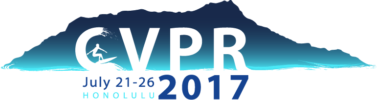

|  |
DIY A Multiview Camera System:
|
Time and Location
07/21/2017 AM
Hawaii Convention Center, Honolulu, Hawaii. (in conjunction with CVPR 2017)
Invited Speakers
Takeo Kanade
Carnegie Mellon Univerity
Thabo Beeler
Disney Research Zurich
Derek Bradley
Disney Research Zurich
Christian Theobalt
MPI Informatik
Organizers
Hanbyul Joo
Carnegie Mellon Univerity
Tomas Simon
Carnegie Mellon Univerity

Hyun Soo Park
Univervity of Minnesota, Twin Cities
Shohei Nobuhara
Kyoto University

Yaser Sheikh
Carnegie Mellon University
Description
The tutorial will cover a wide spectrum of multicamera systems from micro to macro. We will first cover technical hardware issues that are common across systems, such as synchronization, calibration, and data communications, and then we will discuss hardware design factors, such as camera placement, resolution, and framerate, which are strongly related to visual representations. We will also discuss algorithmic challenges associated with the design factors, e.g., matching, tracking, and reconstruction. Three case studies will be conducted: DRZ (submillimeter, hair and eye), MPII (centimeter- meter, single person), and Panoptic Studio (meter, more than 5 people). In particular, we will use the Panoptic Studio as a primary example where we will demonstrate a modular system at the venue. Three distinguished speakers from CMU, MPII, and DRZ are invited. To this end, we will release 3D data and its computational challenges regarding dynamic scene matching, 3D reconstruction, and micro pose/activity recognition.
Schedule
TBD